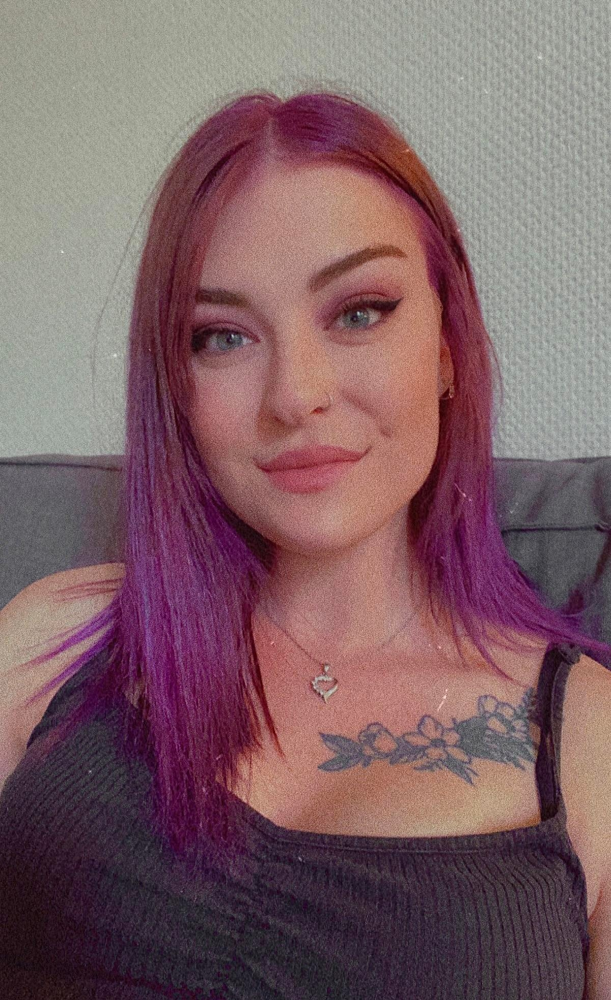
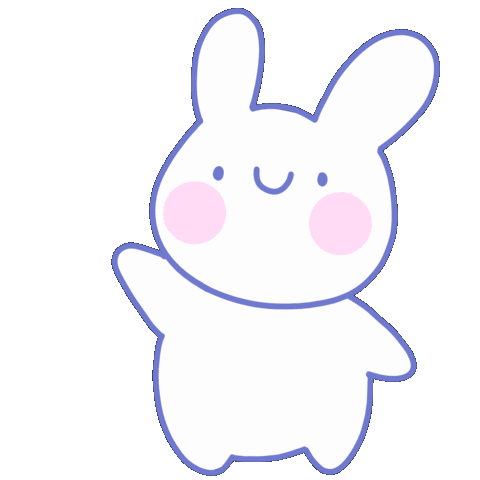

Hey there, so nice of you to pop by!
This is my first try with making a website so I'm still learning as I go. This website will be my own
personal playground of coding, to try out the different things and well, to have fun with it all!


This is me! Hello!
Why do I want to make a website?
The reason why I want to make a website is to learn something completely
new and challenge myself. If you want to contact me and talk about coding, write
to me on miemichellaf@live.dk
Gaming
Gaming has always been something I've enjoyed a lot. I remember my first experience with gaming was when I was just a tiny little bean and sitting on my dad's lap, playing PacMan together. Then I got my first and completely own computer around the age of 6-7, where I could play all sorts of disks-games. Shortly after, my parents bought the first PlayStation where I have fond memories of playing Spyro, car-games and such. And then I was hooked! Today, some of my favorite games consists of The Last of Us (Part I and II), the Assassins Creed games, Gunfire Reborn, CS:GO, Red Dead Redemption 2 - just to name a few! I then chose to make my own Instagram dedicated to my love for gaming and other "nerdy" stuff. If you click the Instagram-logo it will take you to my page. Feel free to check it out!
YouTube
Another passion of mine is singing. I've been singing since I was very little and found a pleasure in being able to "imitate" the notes and sounds I heard in songs, hitting the right notes, etc. It almost became an obsession to me, to be honest 😄 My interested in singing peaked when I stumbled over people uploading covers of Disney-songs to YouTube. I was a huge fan of Disney and loved to sing the songs, so after thinking: "Why the he** not", I made my first YouTube-channel.